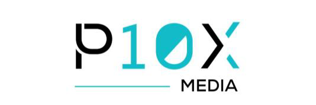

A 30 foot digital unipole planned for the New Pantai Expressway frontage of Kompleks 3C MBSJ, Subang Jaya — an introduction by P10X Media.
Kompleks 3C MBSJ fronts the New Pantai Expressway at Bandar Sunway, in the middle of the Sunway growth corridor. The unipole rises beside the complex’s main entrance, facing the carriageway in both directions.
200,000+
Vehicles use the New Pantai Expressway every day, by the Malaysian Highway Authority’s own monitoring — each one passing the Kompleks 3C frontage.
01
Daily NPE traffic between Kuala Lumpur, Subang Jaya and Bandar Sunway.
Morning and evening peaks pass the site in both directions.
02
Households in Subang Jaya, USJ and Bandar Sunway surround the complex.
Campuses and offices sit minutes from the screen.
03
Daily footfall into Kompleks 3C and its community facilities.
Students and clients of the P10X Academy, already on site.
Founded in 2019, P10X has grown from one outlet into an automotive aesthetic ecosystem — more than 20 outlets and a government accredited academy, built on people, quality and transparency.
May this effort add value to Kompleks 3C’s infrastructure, support the Smart City aspiration, and uplift local PKS entrepreneurs around Subang Jaya.